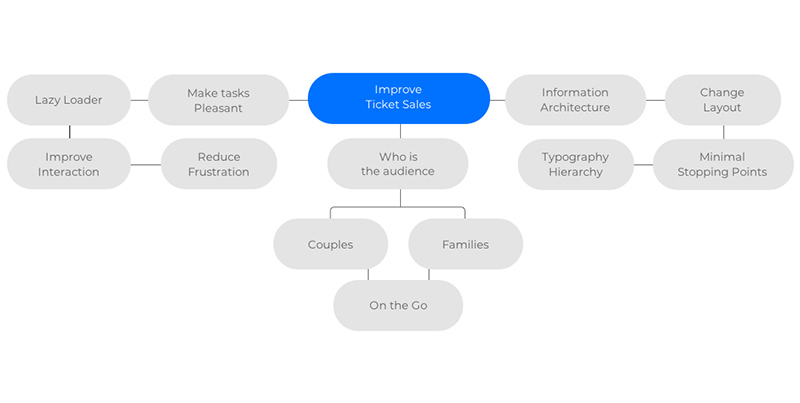
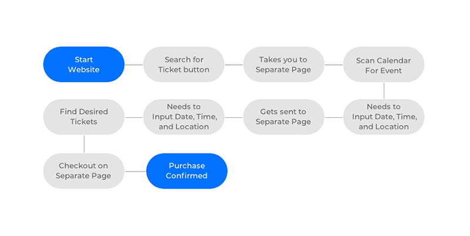
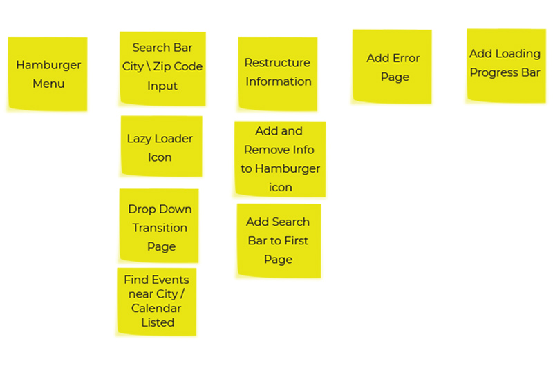
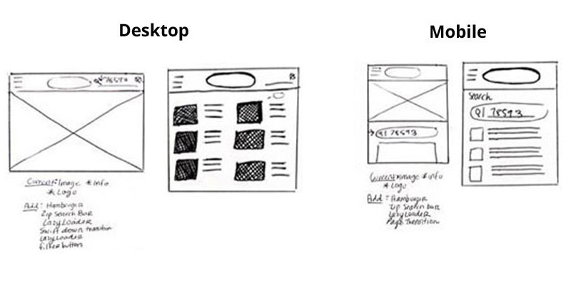
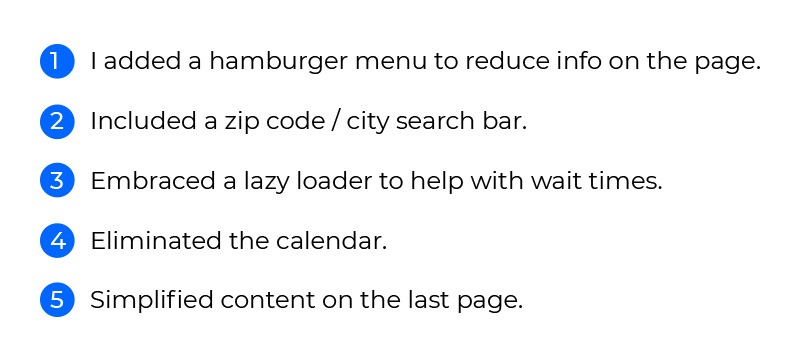

K.M. Circus
Case Study
-
Timeline: February 21 - March 30
-
Customers get to the site but they don’t purchase tickets. Finding the perfect solution for this problem would involve creating a case study that takes notice of the different paint points.
- My role & tasks
-
• User research • Wireframing • UX/UI design
- User personas
-

Carina is 35 years old and a HR Director from South Texas. She would like to purchase circus tickets quickly.
- She would like to buy tickets quicker.
- Would like to view her local events efficiently.
- Needs to find tickets with minimal stops.
Goals / Needs
Pain points
- Breaking Down the Problem: Asking Why
-
Q: Why are customers leaving and not purchasing tickets? A: Buying tickets requires a lot of touching points.
Q: Why is it a hard task to purchase tickets for customers? A: Because they would have to search for tickets and date/time from the calendar.
Q: Why would a calendar frustrate them? A: Because customers get to that calendar only to find their local event.
Q: Why do customers prefer minimal touching points? A: Because people who purchase are usually families who are on the go.
- Mind Mapping Session
-
A Mind Map session led me to questions that I could delve into and focus on to make better choices. “How can I help the website become empathetic toward frustration?”

- Exploring the interaction Model
-
Customers would have to search through dates on the calendar for their ideal location and time only to repeat those steps again on the next page.

- The Ideas Wall
-
Based on the questions I have been asking myself, I decided to come up with ideas on how to improve the experience.

- Sketching out the Concept
-
These are some rough sketches of layout ideas I could do for the Desktop and Mobile versions.

- Wireframing
-
Here are some wireframes I created with Axure RP to bring my sketches to life.

- High Fidelity Prototype
-
Testing the wireframes helped visualize various pain points I did not think through. From those problems I was able to create solutions for my High Fidelity Prototypes.
Here are the changes made to the user interface

- High Fidelity Prototype 1: Before and After
-
I made changes to the navigation header to promote easy access to the search bar. This would make it easier for people to find a show near them.
- High Fidelity Prototype 2: Before and After
-
I removed the calendar for a “Page Loading” to soothe the amount of waiting time.
- High Fidelity Prototype 3: Before and After
-
I used grids to the layout and help people find information easily.
- Reflections
-
- I learned how impactful grids can be for finding information quickly.
- How to improve the user flow by analyzing how they people interact with a site.
- Learned how to decrease the cognitive load for users while searching for something important.